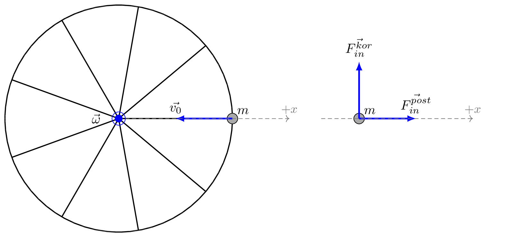

pre.tex
\documentclass[tikz]{standalone}\input{pre.tex}\begin{document}\begin{tikzpicture}[
axis/.style={densely dashed,black!60,font=\small},
force/.style={>=latex,draw=blue,fill=blue},
% m/.style={rectangle,draw,fill=lightgray,minimum size=0.5cm,thin},
m/.style={draw=black!30, rectangle,draw,thin, fill=blue!2, minimum size=0.5cm},
m/.style={draw=black!30, rectangle,draw,thin, fill=blue!2, minimum size=0.5cm},
interface/.style={draw=gray!60,
postaction={draw=gray!60,decorate,decoration={border,angle=-135,
amplitude=0.3cm,segment length=2mm}}},
plane/.style={draw=black!30, very thick, fill=blue!5},
string/.style={draw=black, thick},
pulley/.style={thick},
]
\matrix[column sep=0.5cm] {
\begin{scope}[]
\xdef\r{3cm}
\xdef\rp{5pt}
\draw[thick] (0,0) circle(\r);
\foreach \i in {0,40,...,360}{
\draw[thick] (0,0) -- (\i:\r);
}
\draw[fill=black!40] (\r,0) circle (4pt) node [above right] {$m$};
\draw[force, very thick, ->] (\r,0) -- (\r/2,0) node[above] {$\vec{v_0}$};
\draw [axis, ->] (0,0) -- (1.5*\r,0) node[anchor=south] {$+x$};
{[force]
\draw (0,0) circle (\rp) node[left, xshift=-1em] {$\vec{\omega}$};
\draw [fill=blue,thick] (0,0) circle (\rp/2);
}
\end{scope}
&
\begin{scope}[rotate=0]
\draw[fill=black!40] (\r,0) circle (4pt) node [above right] {$m$};
\draw[force, very thick, ->] (\r,0) -- (\r+\r/2,0) node[above] {$\vec{F_{in}^{post}}$};
\draw[force, very thick, ->] (\r,0) -- (\r,\r/2) node[above] {$\vec{F_{in}^{kor}}$};
\draw [axis, ->] (2,0) -- (2*\r,0) node[anchor=south] {$+x$};
\end{scope}
&
\begin{scope}[]
\end{scope}
\\
};
\end{tikzpicture}\end{document}